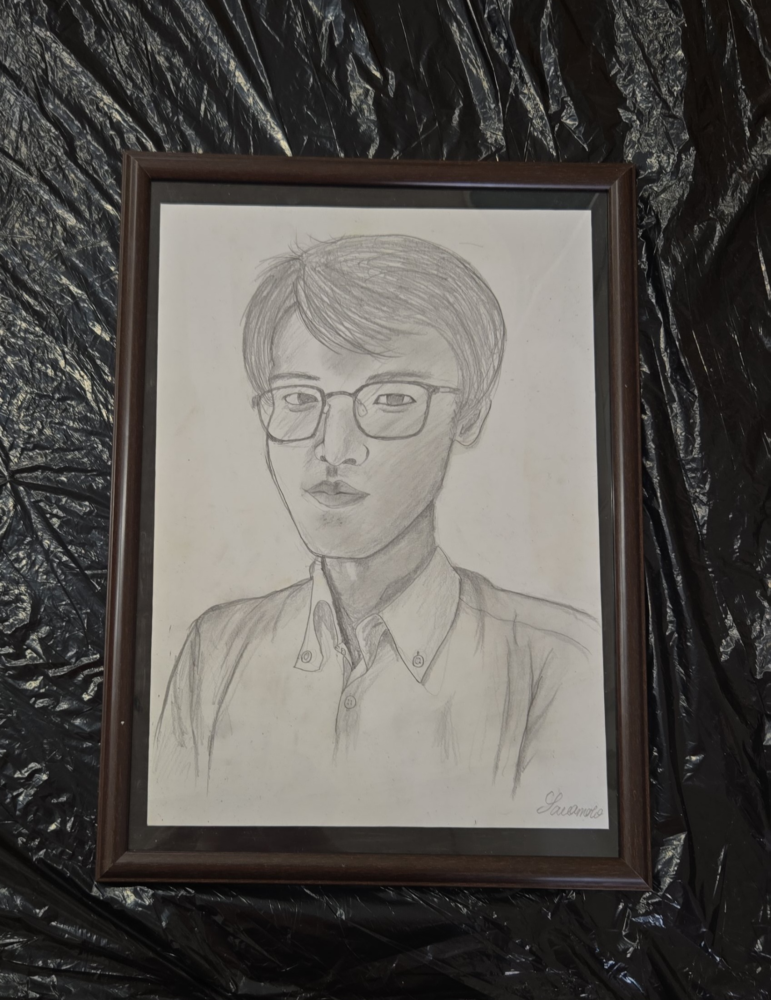

展示作品 Ⅰ ：「澤本伊吹の自画像」
澤本パビリオン元館長
澤本伊吹澤本伊吹の遺作であり、最終作。
パビリオンが経営不振となり、その姿を消した数日前に自室に残されていた自画像。館長としてだけでなく、芸術家としても名を馳せていた彼だが、パビリオンの怪奇現象が酷くなるにつれ、彼自身も精神を病むようになっていったという。
↓

深く、深く、伊吹に吸い込まれるような感覚。
伊吹の瞳の奥で、誰かが手招きしている。
……澤本先生？
あなたが今見ている、その澤本先生。
じっとこちらを見ている。今にも絵の中から出てきそうだ。
いま動いた…？？
先へ進まないと。